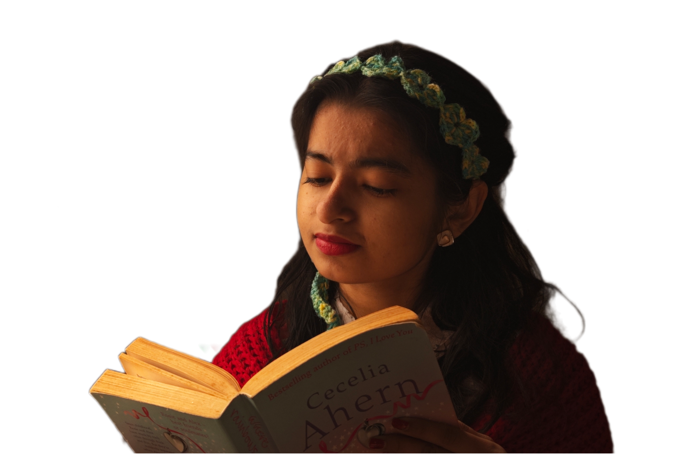

I am a design student, with most experience in Film and Video Communication, trying to further explore more in Spatial design.
I am pursuing my Bachelors at National Institute of Design, Ahmedabad, India and currently on an exchange programme at Hochschule Luzern - Design Film Kunst, Luzern, Switzerland.
My area of interest is noticing something new everyday! From books to music to languages to people, anything and everything around our lives. I like to experiment with media and believe every medium has the capability to leave a loud impact in its own way.
With my work, I try to emphasis on day to day elements, both tangible and intangible and various narratives around it.

“Things we lose have a way of coming back to us in the end, if not always in the way we expect”
-Luna Lovegood